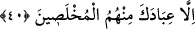

edilen bir şey yapılması, bilinen bir şey değildir. Çünkü yemînler örfe dayanır.
İnsanların örfünde yemîn etmek mümkün olan her şeye yemîn etmeye yemin denir, aksi
halde denilmez.
Fakir (Bursevî) -Mutlak kudret sâhibi Allah kendisini muhafaza buyursun- der ki: Hz.
Şeyhim ve senedim -Allah rûhunu râhat ettirsin- şöyle dediğini işittim: “Âdem (a.s.)
kendi zâtî durumunu keşf edip yolunu tuttu ve: “Rabbimiz biz kendimize zulmettik.”
dedi (el-A‘râf, 7/23). İblis ise böyle bir durum olmadığından “Beni azdırmana yemin
ederim ki” dedi ve azdırmayı Allah’a isnâd etti. Çünkü bu azgınlık, İblis’in ilâhî
ilimdeki varlığında (aynında) ve gaybî durumunda mevcûd ve sâbit idi. Dolayısıyla bu
azgınlığın bu âlemde ortaya çıkması gerekiyordu. Allah Teâlâ da onu ortaya çıkardı.
Allah’ın sâbit ve mukadder olmayan bir şeyi ortaya çıkarması muhaldir. ‘Ezelî saâdet
ve rahmânî inâyet” ifâdeleri edeb yollu söylenmiş sözlerdir. Yoksa bütün varlıkların
durumları mutlaka ortaya çıkar. Bunu iyi dinle, iyi belle ve koru.
Hâfız der ki:
Pîrimiz dedi ki: Hakk’ın sun‘ kalemi hatâ üzere gitmez
Âferin hatâ setr edici pirin nazarına.
“Ve hepsini azdıracağım.” Yâni, onların hepsini azgınlık ve sapkınlığa
sürükleyeceğim.
40. “Ancak içlerinden ihlâslı kulların hariç.”
“Ancak içlerinden” özel olarak kendine tâat etmelerini sağladığın, gizli ve açık şirk
şâibelerinden temizlediğin “ihlâslı kulların hariç.” Tuzaklarım bunlara işlemez. Çünkü
bunlar basîret ve uyanıklık üzere hareket eden gerçek tevhîd ehlidir.
et-Te’vîlâtü’n-Necmiyye’de şöyle denir: “Ancak lütuflarının cezbeleri ile varlık
hapsinden kurtardığın ve hüviyetin ile kendilerinden fânî kıldığın kulların hâriç...”
Hz. Şeyhim ve senedim (k.s.) bana yazdığı değerli mektuplarından birinde şöyle
diyordu: Sâdık ile muhlis aynı kapıya çıkar. Her ikisi de mutlak mânâda bütün nefsânî
sıfat şâibelerinden kurtulmaktan ibârettir. Sıddîk ile muhlas da aynı kapıya çıkar. Her
ikisi de gayriyyet şâibelerinden kurtulmaktan ibârettir. İkincisi ufukça daha geniş, daha
ihâtalıdır. Sen de bu ikincilerin arasına girmeye çalış ki bu sûrette tüm ağyardan ve
kederlerden emin olasın. Sıdkın ne kadar şerefli olduğu konusunda İblis’in bile kendisi
için yalanı revâ görmeyip muhlasları istisnâ etmiş olması kâfîdir.
Hâfız şöyle der:
Saf su gibi olan gönülden sıdk yolunu öğren